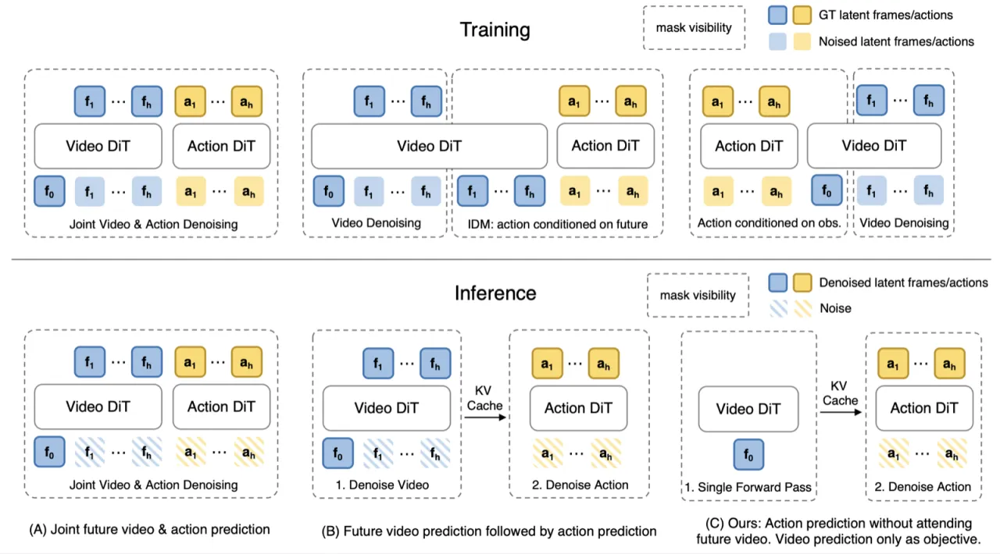
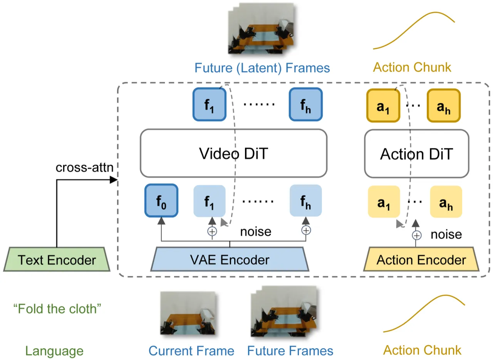
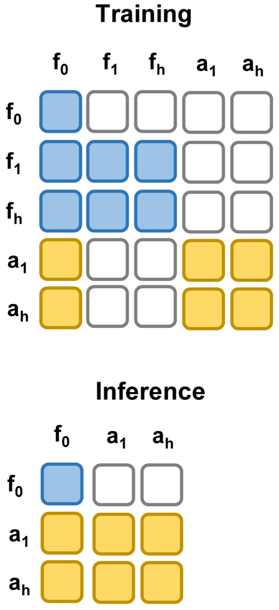
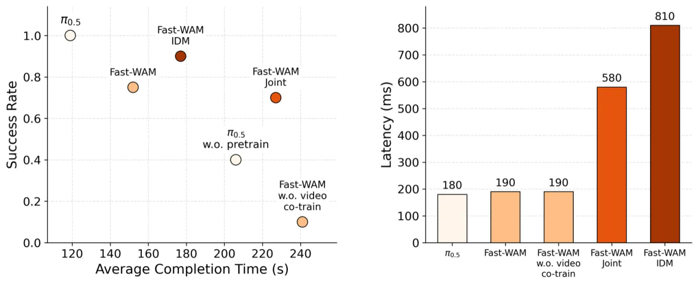

World Action Models（WAMs）通常在推理时生成未来观测帧，再根据生成的未来帧预测动作。Fast-WAM 提出解耦这两个因素：训练时保留视频联合训练目标，推理时直接跳过未来帧生成，仅凭当前观测的 latent 世界表征一次 forward pass 输出动作。在 LIBERO 和 RoboTwin 2.0 等模拟基准，以及真实世界折叠毛巾任务上，Fast-WAM 实现了与 imagine-then-execute 范式相当甚至更优的性能，推理延迟仅需 190ms，比同类方法快 4× 以上。
现有 World Action Models 把训练时的视频预测目标与推理时的未来帧生成捆绑在一起，无法区分二者各自的贡献。推理时的迭代去噪带来极高延迟，阻碍了实际部署。
"It remains unclear whether explicit future imagination is actually necessary for strong action performance... existing WAM systems typically entangle these two factors, making it difficult to determine which one is actually responsible for the observed gains."

研究的核心假设是：视频预测在 WAM 中的主要价值来自训练时改善世界表征，而非推理时提供未来观测。为验证这一假设，作者构建了受控变体——Fast-WAM-Joint、Fast-WAM-IDM 以及移除视频联合训练的消融版本——进行系统对比。
Fast-WAM 基于 Mixture-of-Transformer（MoT）架构，由视频 Diffusion Transformer（DiT）与动作专家 DiT 通过 shared attention 组合而成。训练时三类 token 同时参与：当前帧的 clean latent token、未来帧的 noisy video token（仅训练用）、动作 token。推理时仅保留当前帧 latent，单次前向传播直接输出动作。

L = L_act + λ · L_vid，同时优化动作生成与视频预测。训练时，模型同时优化动作 flow matching 损失（L_act）和视频 flow matching 损失（L_vid），以系数 λ 加权平衡。视频预测目标驱使模型学习物理上有意义的世界表征，即使在推理时这些表征不再依赖未来帧生成也能保留其有效性。Attention mask 的设计保证 action token 不能看到 noisy future token，从而动作预测的性能不依赖于测试时的视频生成质量。
推理时，"only the clean first-frame latent tokens are retained and passed through the video backbone once to produce latent world features for the action expert."这意味着完全跳过迭代式视频去噪，推理延迟从 810ms（Fast-WAM-IDM）降至 190ms，实现超过 4× 的加速，同时保持相当的动作生成质量。

未来视频 token 与动作 token 同时进行去噪，shared attention 使两类 token 互相关注。推理时仍需运行视频去噪，延迟较高。用于研究 joint denoising 对性能的影响。
先完整生成未来视频帧（Causal 范式），再将生成结果作为条件输入动作预测模块。推理延迟约 810ms。用于研究显式未来生成对动作性能的作用。
实验涵盖两个模拟基准（LIBERO、RoboTwin 2.0）和真实世界折叠毛巾任务（Galaxea R1 Lite 平台）。所有 Fast-WAM 变体均不使用 embodied pretraining，而部分强基线方法使用了大规模具身预训练数据。
| 方法 | Embodied PT. | Clean | Rand. | Average |
|---|---|---|---|---|
| π₀ | ✓ | 65.92 | 58.40 | 62.2 |
| π₀.₅ | ✓ | 82.74 | 76.76 | 79.8 |
| Motus | ✓ | 88.66 | 87.02 | 87.8 |
| LingBot-VA | ✓ | 92.90 | 91.50 | 92.2 |
| Fast-WAM w.o. video co-train | ✗ | 82.76 | 84.80 | 83.8 |
| Fast-WAM-Joint | ✗ | 90.84 | 90.32 | 90.6 |
| Fast-WAM-IDM | ✗ | 91.16 | 91.34 | 91.3 |
| Fast-WAM (Ours) | ✗ | 91.88 | 91.78 | 91.8 |
| 方法 | Embodied PT. | Spatial | Object | Goal | Long | Average |
|---|---|---|---|---|---|---|
| OpenVLA | ✓ | 84.7 | 88.4 | 79.2 | 53.7 | 76.5 |
| π₀ | ✓ | 96.8 | 98.8 | 95.8 | 85.2 | 94.1 |
| π₀.₅ | ✓ | 98.8 | 98.2 | 98.0 | 92.4 | 96.9 |
| Motus | ✓ | 96.8 | 99.8 | 96.6 | 97.6 | 97.7 |
| LingBot-VA | ✓ | 98.5 | 99.6 | 97.2 | 98.5 | 98.5 |
| Fast-WAM w.o. video co-train | ✗ | 89.2 | 99.2 | 95.4 | 90.0 | 93.5 |
| Fast-WAM-Joint | ✗ | 99.6 | 99.4 | 98.2 | 96.8 | 98.5 |
| Fast-WAM-IDM | ✗ | 98.8 | 97.8 | 97.8 | 97.6 | 98.0 |
| Fast-WAM (Ours) | ✗ | 98.2 | 100.0 | 97.0 | 95.2 | 97.6 |

受控实验给出一致结论：去掉视频联合训练引发的性能下降，远大于 Fast-WAM 与 imagine-then-execute 变体之间的差异。具体来说：
上述结果有力支持核心论点："the main value of video prediction in WAMs may lie in improving world representations during training rather than generating future observations at test time."
论文明确指出："an important direction for future work is to study the effect of larger-scale pretraining data and model scaling on this design." 当前实验未涉及大规模具身预训练，无法确认结论在更大规模下是否依然成立。
论文明确提到"omit the outer auto-regressive loop for simplicity and controlled comparison"，实际部署中需要完整的序列控制流，本文尚未覆盖该场景。
推理时仅使用第一帧的 clean latent token，对于需要多帧历史的任务（如部分遮挡、长时依赖场景）可能不足，而 imagine-then-execute 变体理论上能利用生成的未来帧进行多步规划。
论文关注的核心是动作性能与推理速度，对视频 DiT 生成的未来帧质量（保真度、一致性）未做定量评估，无法判断生成质量与表征质量之间的关联。